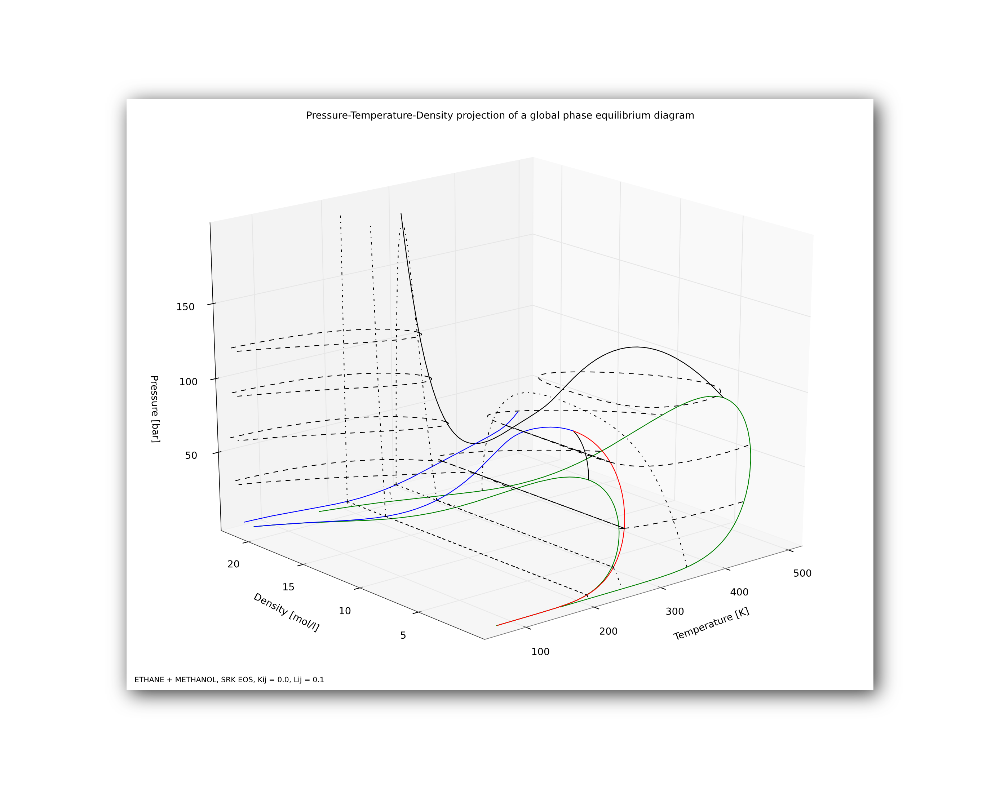
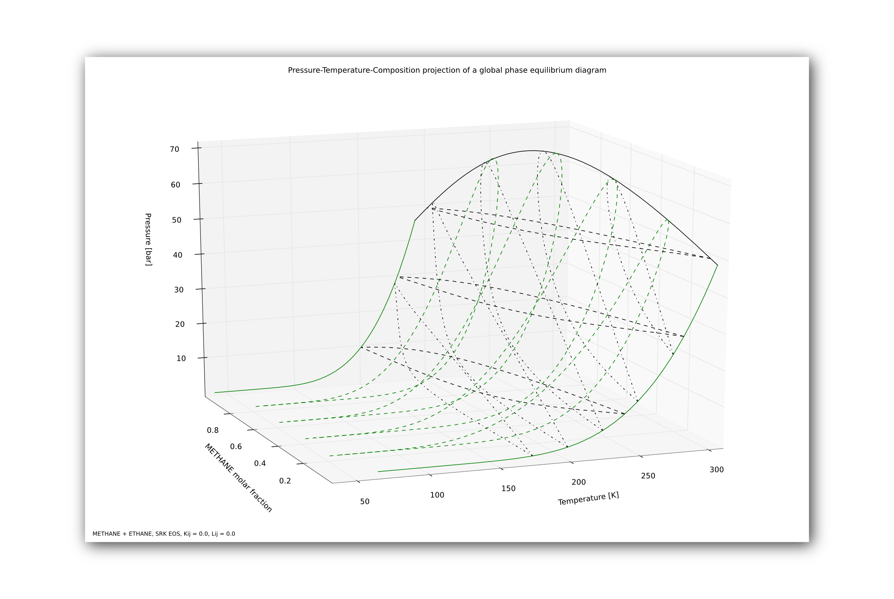
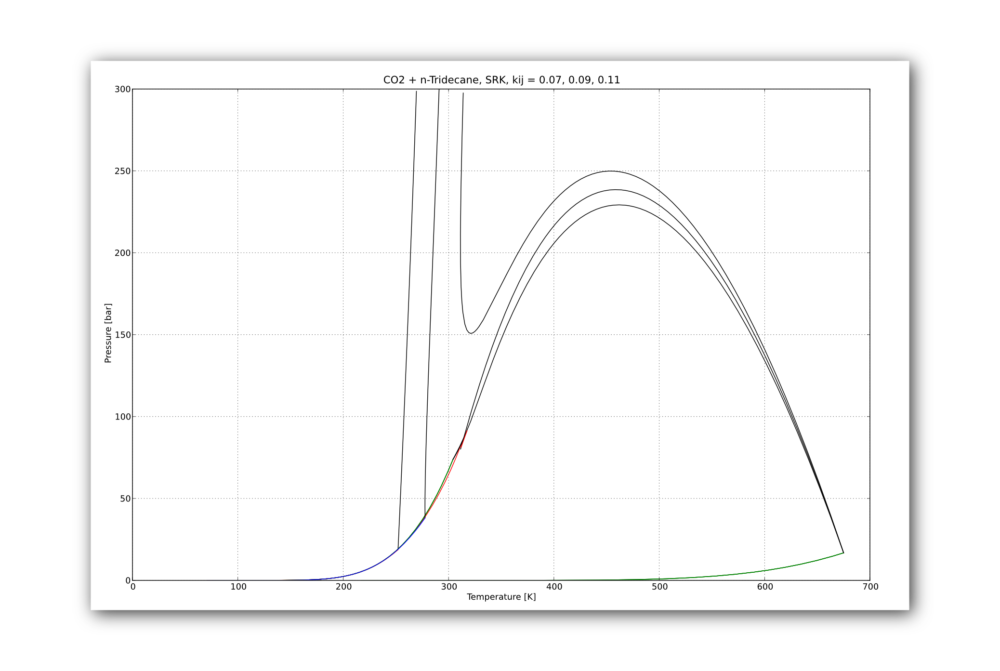

Ejemplos de diagramas¶
Este apéndice muestra algunos ejemplos de diagramas realizados con la aplicación

Visualización 3-D de un diagrama global P-T-ρ con superposición de curvas Pxy y Txy. Los gráficos 3D se pueden rotar a la perspectiva deseada.

Visualización 3-D de un diagrama global P-T-z (comportamiento tipo I) y superposición de diagramas tipo Pxy para distintas temperaturas, Txy para distintas presiones e isopletas para distintas composiciones.

Superposición de tres diagramas globales que permiten observar el efecto del parámetro de interacción k12. La imágen fue exportada desde GPEC.

Visualización 3-D de un diagrama global P-T-z con superposición de curvas Pxy, Txy e isopletas.